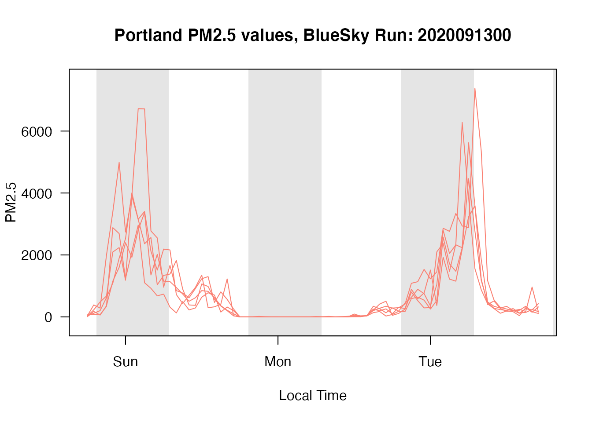

Lazy_Evaluation.RmdThis vignette will introduce the concept of ‘lazy evaluation’ and how it is useful for working with the large data sets handled by the AirFireModeling package.
‘Lazy evaluation’ is an evaluation strategy in programming that is centered on procrastination. When an expression is encountered in a program using this strategy, the calculation of that expression is postponed until its value is required elsewhere (which might never happen). Lazy evaluation is typically found in functional programming languages like Haskell and R, and contrasts the ‘eager evaluation’ strategy common to imperative languages such as C++, Java, and Python.
To demonstrate the difference, consider the following code:
1 x <- 1 + 2
2 print(x)An ‘eager’ approach:
1 + 2 to get 3 and assign 3 to x.x and print it out.A ‘lazy’ approach:
1 + 2 assigned to x.x is needed here! Now calculate its expression, assign the result to x, and then print the value of x.While the difference is negligible in this example, the benefits of lazy evaluation can become apparent when expressions become large and complex. The lazy strategy can greatly improve performance and reduce a program’s memory footprint by creating values only when they are actually needed. However, this can come at the cost of increased overhead and the loss of control.
Lazy evaluation is useful when it comes to working with netCDF data. NetCDF (network Common Data Format) is a file format designed around the creation, access, and sharing of large array-based data sets. It is commonly used in geospatial applications like meteorology, climatology, and oceanography, but is also useful in many other fields of science.
NetCDF data is:
Self-describing, meaning that it includes information about the data it contains such as its grid layout and the names and units of its variables.
Portable, so that a netCDF file created on one operating system can be transferred and readable to a machine running a different operating system.
Scalable, such that a small subset of a large netCDF file can be accessed efficiently without reading the entire contents of the file.
Efficiency is a primary concern when working with netCDF files since they often contain enormous amounts of information and can therefore take time to load and large portions of RAM to store. It is important then to read/write only what is necessary only when required. The ncdf4 package in R achieves this efficiency by providing an interface for a netCDF file which loads as little data as possible until queried for specific variables.
To illustrate this, ncdf4 supplies the nc_open function which “opens” a netCDF file for reading/writing. Its output is an object which contains just the file metadata, describing its contents without loading its actual readings. These can be accessed after opening the file through a call to ncvar_get requesting a desired variable.
The raster package provides Raster objects which can be used to represent the gridded information stored in netCDF files. Many useful functions are provided for sampling, visualizing, and generally managing spatial data either as a single instantaneous RasterLayer or over time by combining many layers into a RasterBrick.
Rasters also follow the lazy evaluation strategy – putting off loading their actual cell values until specifically requested, as explained in the raster package documentation:
In many cases, e.g. when a RasterLayer is created from a file, it does (initially) not contain any cell (pixel) values in memory (RAM), it only has the parameters that describe the RasterLayer. You can access cell-values with getValues(), extract() and related functions.
Let’s demonstrate this by using the AirFireModeling package to check out the RasterBrick produced by a BlueSky model run:
library(AirFireModeling)
setModelDataDir("~/Data/BlueSky")
# Load the BlueSky model run file for October 9th, 2019
modelRun <- bluesky_load("PNW-4km", 2019100900)
modelRun## class : RasterBrick
## dimensions : 264, 514, 135696, 71 (nrow, ncol, ncell, nlayers)
## resolution : 0.04000001, 0.03999999 (x, y)
## extent : -128.57, -108.01, 39.73, 50.29 (xmin, xmax, ymin, ymax)
## crs : +proj=longlat +datum=WGS84 +ellps=WGS84 +towgs84=0,0,0
## source : /Users/jonathan/Data/BlueSky/PNW-4km_2019100900_v2.nc
## names : X1570582800, X1570586400, X1570590000, X1570593600, X1570597200, X1570600800, X1570604400, X1570608000, X1570611600, X1570615200, X1570618800, X1570622400, X1570626000, X1570629600, X1570633200, ...
## z-value : 1570582800, 1570834800 (min, max)
## varname : PM25
## level : 1modelRun is an S4 object of class RasterBrick. We can access the individual RasterLayers of the RasterBrick by referencing layer names:
## class : RasterLayer
## band : 1 (of 71 bands)
## dimensions : 264, 514, 135696 (nrow, ncol, ncell)
## resolution : 0.04000001, 0.03999999 (x, y)
## extent : -128.57, -108.01, 39.73, 50.29 (xmin, xmax, ymin, ymax)
## crs : +proj=longlat +datum=WGS84 +ellps=WGS84 +towgs84=0,0,0
## source : /Users/jonathan/Data/BlueSky/PNW-4km_2019100900_v2.nc
## names : X1570582800
## z-value : 1570582800
## zvar : PM25
## level : 1Let’s inspect the memory used by these RasterLayers before and after they are used in expressions.
raster <- modelRun$X1570582800
editedRaster <- modelRun$X1570582800 + 0 # Cell values must be loaded now
pryr::object_size(raster)## 12 kB## 1.1 MBEven though these two RasterLayers describe the same data, the edited raster is much larger because it needs to load in the cell readings while the original raster still only needs to hold its metadata. Lazy evaluation is working to do the bare minimum!
The AirFireModeling package uses the RasterBricks produced by BlueSky model runs for reading and visualizing PM 2.5 data. These model run files typically range from a few dozen megabytes to several hundred, so it is important to consider how lazy evaluation factors into working with this data efficiently.
Like we have seen for the individual RasterLayers, model run objects also use lazy evaluation to load in readings only when absolutely necessary:
## [1] 0 0## [1] 135696 71The actual dimensions of the data value matrix is 0x0 until the values are used. You can also see this lazy evaluation when comparing the memory usage of a model run holding just metadata and a model run after its values are loaded:
## 19.1 kB## 77.1 MBWhenever possible, it is best to restrict the area of a requested model in order to avoid loading lots of unnecessary data. The bluesky_load() function allows you to perform this optimization by setting the latitude and longitude extents of your request through the xlim and ylim parameters.
Let’s compare an area-optimized raster with an unoptimized one:
unoptimizedModelRun <- bluesky_load("PNW-4km", 2019100900)
optimizedModelRun <- bluesky_load("PNW-4km", 2019100900,
xlim = c(-123, -122),
ylim = c(45, 46))
pryr::object_size(unoptimizedModelRun)## 19.1 kB## 403 kBWe can see that there is a big difference when initially loading optimized and unoptimized rasters. The unoptimized one is lazy evaluated so that its initial memory usage is very small, but the optimized version immediately loads everything. However, once they are put in use it is clear that the optimized raster is quite a bit smaller overall:
## 77.1 MB## 402 kBLet’s see this optimization in action by plotting the PM 2.5 levels around Portland, Oregon. We can request the data in just this area by defining a rectangular boundary around it with longitudes and latitudes:
# MazamaSpatialUtils are needed to determine timezone and state
library(MazamaSpatialUtils)
PWFSLSmoke::initializeMazamaSpatialUtils()
# Load model data
rasterList <- raster_load(
modelName = "PNW-1.33km",
modelRun = 2019100900,
xlim = c(-123, -122),
ylim = c(45, 46)
)
model_Portland <- raster_toMonitor(
rasterList,
longitude = -122.68,
latitude = 45.52,
radius = 5
)
PWFSLSmoke::monitor_timeseriesPlot(
model_Portland[[1]],
type = 'l',
col = 'salmon',
hourInterval = 3,
shadedNight = TRUE,
)
title("Portland PM2.5 values, BlueSky Run: 2019100900")